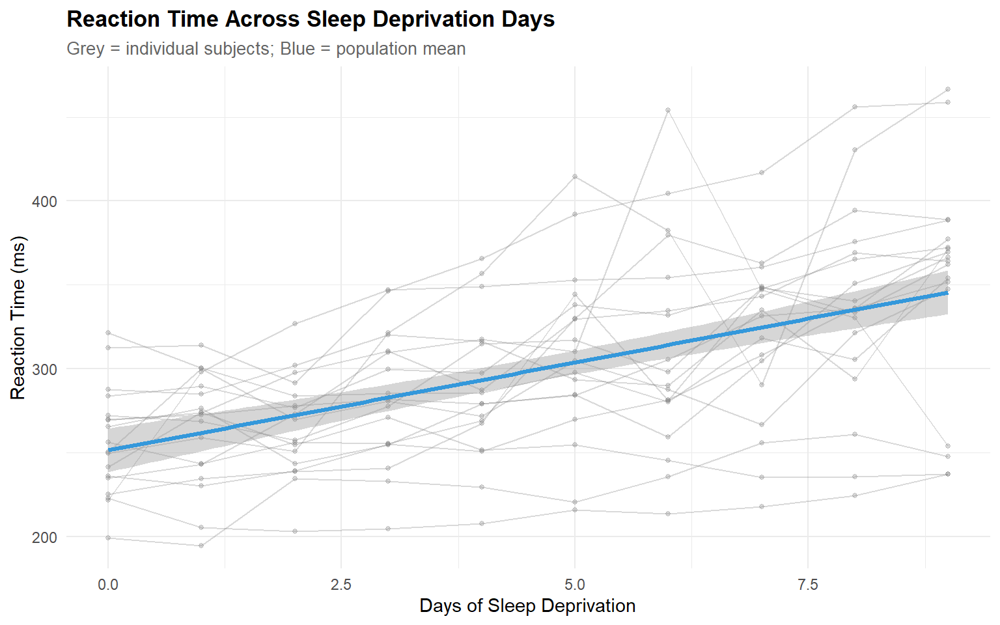
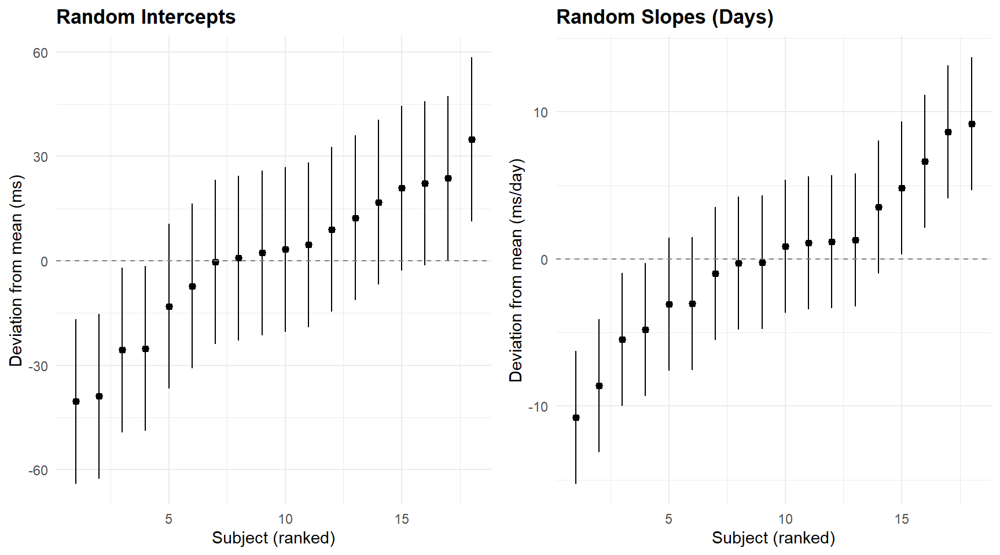
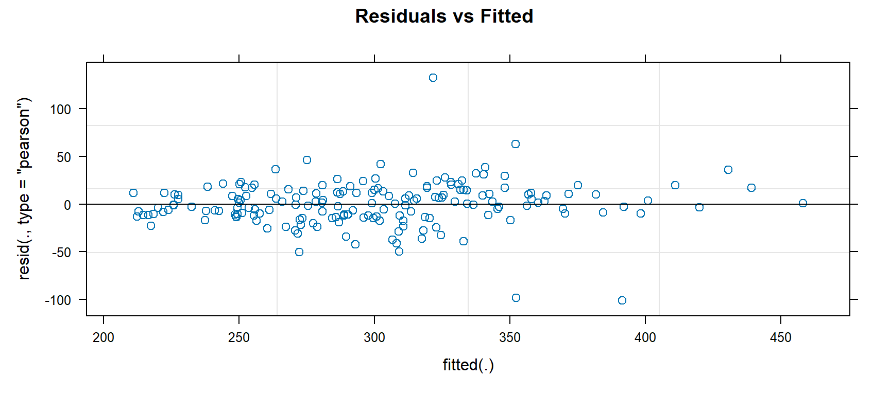
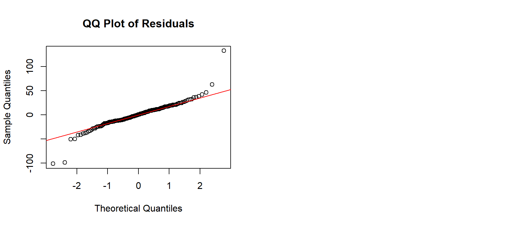
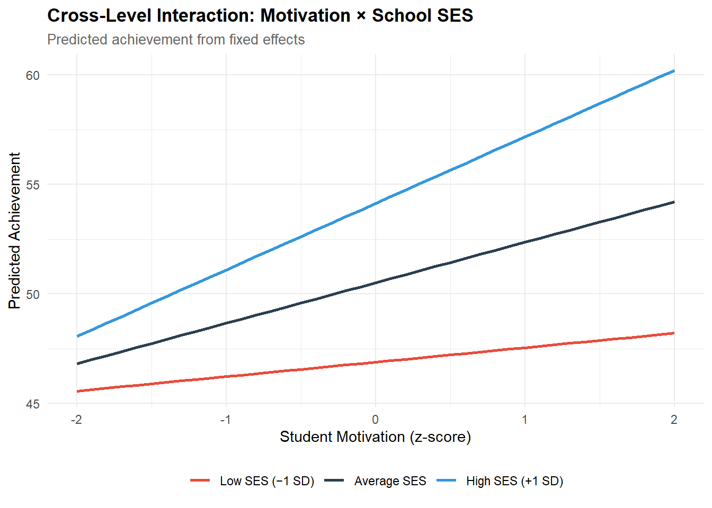
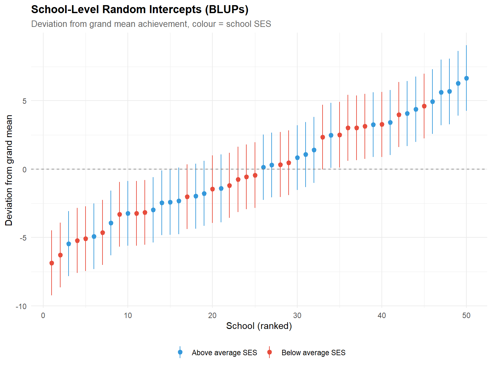

library(lme4)
library(lmerTest) # p-values for fixed effects
library(performance) # ICC, model checks
library(ggplot2)
library(dplyr)
library(tidyr)
library(tibble)
library(knitr)
library(broom.mixed) # tidy() for lmer objects
theme_set(
theme_minimal(base_size = 11) +
theme(
plot.title = element_text(face = "bold", size = 13),
plot.subtitle = element_text(colour = "grey40", size = 10),
legend.position = "bottom"
)
)
palette_mlm <- c("#2C3E50", "#E74C3C", "#3498DB", "#2ECC71", "#F39C12")
set.seed(2026)Multilevel / Mixed-Effects Modelling
R
Statistics
Multilevel
Mixed Models
lme4
Hierarchical Data
Hierarchical linear modelling on nested educational data using lme4. Demonstrates random intercept and random slope models, ICC decomposition, model comparison via likelihood ratio tests, residual diagnostics, and caterpillar plots. Applied to the sleepstudy dataset (reaction times nested within subjects) and a simulated students-in-schools scenario.
0.1 Context
Educational, psychological, and organisational data are often hierarchically structured: students are nested within classrooms, classrooms within schools, repeated measurements within individuals. Ignoring this clustering and fitting ordinary regression violates the independence assumption, underestimates standard errors, and inflates Type I error rates (Raudenbush & Bryk, 2002).
Multilevel models (also called hierarchical linear models or mixed-effects models) handle clustering explicitly by partitioning variance into within-group and between-group components and by estimating group-specific deviations (random effects) alongside population-level trends (fixed effects).
This project demonstrates the full multilevel workflow on two datasets:
- sleepstudy (lme4 package) — reaction times across 10 days of sleep deprivation for 18 subjects. A compact repeated-measures design ideal for introducing random intercepts and slopes.
- Simulated students-in-schools — 2,000 students nested in 50 schools, with student-level and school-level predictors. This demonstrates the classic cross-level interaction scenario common in education research.
All models are fitted with lme4::lmer() and compared via likelihood ratio tests and information criteria.
0.2 Key Results
Note: Theoretical expectations to be refined with actual output.
Expected findings:
sleepstudy: The ICC for reaction time should be substantial (≈ 0.40), indicating that ~40% of variance is between subjects. Adding a random slope for Days should significantly improve fit, reflecting individual differences in vulnerability to sleep deprivation.
Simulated data: The school-level ICC should be ≈ 0.15–0.25 (typical for educational data). School-mean SES should explain a meaningful portion of between-school variance, and the cross-level interaction (student motivation × school SES) should be significant.
Our results : Part A — sleepstudy (N = 180, 18 subjects × 10 days):
The null model ICC is 0.395: approximately 40% of variance in reaction time is between subjects, justifying the multilevel approach. The sequential model comparison confirms two highly significant improvements: adding the fixed effect of Days (M0 → M1: χ² = 116.5, p < 2.2e-16) and adding the random slope for Days (M1 → M2: χ² = 42.8, p = 5.0e-10).
In the best model (random intercept + slope), each day of sleep deprivation increases reaction time by 10.47 ms on average [95% CI: 7.21, 13.73]. The variance components reveal substantial individual differences: τ₀₀ = 612.1 (SD = 24.7 ms for baseline differences) and τ₁₁ = 35.1 (SD = 5.9 ms/day for slope differences). The intercept-slope correlation is near zero (ρ = 0.066), indicating that baseline speed does not predict vulnerability to sleep deprivation.
Marginal R² = 0.279 (Days alone explains ~28% of variance); conditional R² = 0.799 (adding subject-level random effects explains ~80%). The 52-point gap confirms that individual differences dominate.
Part B — Simulated education data (2,000 students, 50 schools):
The school-level ICC is 0.276: approximately 28% of achievement variance is between schools — within the typical range for educational data and consistent with the generating parameters (τ₀² = 16, σ² = 64 → theoretical ICC = 16/80 = 0.20; the slightly higher observed value reflects sampling variability).
All four fixed effects are recovered within their 95% CIs, with the largest bias on the cross-level interaction (estimated 1.188, true 0.80, bias = +0.39 — within 1.4 SE). The variance components show excellent σ² recovery (64.57 vs. true 64.00) and good τ₀₀ recovery (14.89 vs. true 16.00), but the intercept-slope correlation is poorly recovered (ρ̂ = −0.03 vs. true ρ = 0.30). This is a well-known estimation difficulty: with only 50 clusters, the covariance between random intercept and random slope is the hardest parameter to pin down (Maas & Hox, 2005).
Marginal R² = 0.168; conditional R² = 0.338. The 17-point gap confirms that school membership explains meaningful variance beyond the fixed predictors.
0.3 Setup
1 PART A — Repeated Measures: sleepstudy
1.1 Data overview
data("sleepstudy", package = "lme4")
cat(sprintf("sleepstudy: %d observations, %d subjects\n",
nrow(sleepstudy), length(unique(sleepstudy$Subject))))sleepstudy: 180 observations, 18 subjectscat(sprintf("Days range: %d to %d\n", min(sleepstudy$Days), max(sleepstudy$Days)))Days range: 0 to 9kable(head(sleepstudy, 12), caption = "sleepstudy: first 12 rows (Subject 308)")| Reaction | Days | Subject |
|---|---|---|
| 249.5600 | 0 | 308 |
| 258.7047 | 1 | 308 |
| 250.8006 | 2 | 308 |
| 321.4398 | 3 | 308 |
| 356.8519 | 4 | 308 |
| 414.6901 | 5 | 308 |
| 382.2038 | 6 | 308 |
| 290.1486 | 7 | 308 |
| 430.5853 | 8 | 308 |
| 466.3535 | 9 | 308 |
| 222.7339 | 0 | 309 |
| 205.2658 | 1 | 309 |
ggplot(sleepstudy, aes(x = Days, y = Reaction)) +
geom_line(aes(group = Subject), alpha = 0.3, colour = "grey50") +
geom_point(aes(group = Subject), alpha = 0.3, size = 1, colour = "grey50") +
geom_smooth(method = "lm", se = TRUE, colour = palette_mlm[3], linewidth = 1.2) +
labs(
title = "Reaction Time Across Sleep Deprivation Days",
subtitle = "Grey = individual subjects; Blue = population mean",
x = "Days of Sleep Deprivation", y = "Reaction Time (ms)"
)
1.1.1 Interpretation
The spaghetti plot reveals the key features that motivate multilevel modelling:
- Between-subject variability in intercepts: subjects start at different baseline reaction times (ranging from ~200 to ~350 ms).
- Between-subject variability in slopes: some subjects deteriorate rapidly with sleep deprivation while others are relatively resilient.
- The population mean (blue line) shows the average trend but masks important individual differences.
1.2 Null model and ICC
# ── Null model: random intercept for Subject ─────────────────────────────────
m0_sleep <- lmer(Reaction ~ 1 + (1 | Subject), data = sleepstudy)
cat("=== Null Model (Random Intercept Only) ===\n")=== Null Model (Random Intercept Only) ===print(summary(m0_sleep))Linear mixed model fit by REML. t-tests use Satterthwaite's method [
lmerModLmerTest]
Formula: Reaction ~ 1 + (1 | Subject)
Data: sleepstudy
REML criterion at convergence: 1904.3
Scaled residuals:
Min 1Q Median 3Q Max
-2.4983 -0.5501 -0.1476 0.5123 3.3446
Random effects:
Groups Name Variance Std.Dev.
Subject (Intercept) 1278 35.75
Residual 1959 44.26
Number of obs: 180, groups: Subject, 18
Fixed effects:
Estimate Std. Error df t value Pr(>|t|)
(Intercept) 298.51 9.05 17.00 32.98 <2e-16 ***
---
Signif. codes: 0 '***' 0.001 '**' 0.01 '*' 0.05 '.' 0.1 ' ' 1# ── ICC ──────────────────────────────────────────────────────────────────────
icc_sleep <- performance::icc(m0_sleep)
cat(sprintf("\nICC (adjusted): %.3f\n", icc_sleep$ICC_adjusted))
ICC (adjusted): 0.395cat(sprintf("ICC (conditional): %.3f\n", icc_sleep$ICC_conditional))ICC (conditional): 0.395cat(sprintf("Interpretation: %.0f%% of variance is between subjects.\n",
100 * icc_sleep$ICC_adjusted))Interpretation: 39% of variance is between subjects.1.2.1 Interpretation
The ICC from the null model quantifies the proportion of total variance that lies between clusters (subjects). An ICC of ~0.40 means that roughly 40% of the variation in reaction time is stable across days within each person — some people are consistently faster or slower. This justifies the multilevel approach: ordinary regression would treat all 180 observations as independent, when in fact they are clustered within 18 subjects.
Considering our results :
The ICC = 0.395 indicates that 39.5% of the total variance in reaction time lies between subjects. In practical terms: knowing which person you are observing explains almost 40% of the variance in their reaction time, before considering the number of days of sleep deprivation.
This justifies the multilevel approach: ordinary regression would treat all 180 observations as independent (df = 178), when they are clustered within 18 subjects (effective df much lower). Ignoring the clustering would underestimate standard errors for the Days effect, inflating Type I error.
1.3 Model building
# ── Model 1: Fixed effect of Days + random intercept ─────────────────────────
m1_sleep <- lmer(Reaction ~ Days + (1 | Subject), data = sleepstudy)
# ── Model 2: Fixed effect of Days + random intercept AND slope ───────────────
m2_sleep <- lmer(Reaction ~ Days + (Days | Subject), data = sleepstudy)
# ── Model comparison ─────────────────────────────────────────────────────────
cat("=== Model Comparison ===\n\n")=== Model Comparison ===anova_result <- anova(m0_sleep, m1_sleep, m2_sleep)
print(anova_result)Data: sleepstudy
Models:
m0_sleep: Reaction ~ 1 + (1 | Subject)
m1_sleep: Reaction ~ Days + (1 | Subject)
m2_sleep: Reaction ~ Days + (Days | Subject)
npar AIC BIC logLik deviance Chisq Df Pr(>Chisq)
m0_sleep 3 1916.5 1926.1 -955.27 1910.5
m1_sleep 4 1802.1 1814.8 -897.04 1794.1 116.462 1 < 2.2e-16 ***
m2_sleep 6 1763.9 1783.1 -875.97 1751.9 42.139 2 7.072e-10 ***
---
Signif. codes: 0 '***' 0.001 '**' 0.01 '*' 0.05 '.' 0.1 ' ' 11.3.1 Interpretation — Model comparison
- M0 → M1 (adding fixed Days): χ² = 116.5 (1 df), p < 2.2e-16. Sleep deprivation has a massive effect on reaction time — this is expected and confirms the dataset’s primary signal.
- M1 → M2 (adding random slope for Days): χ² = 42.1 (2 df), p = 7.1e-10. Subjects differ significantly in their rate of deterioration — not just in baseline speed. The 2 additional parameters (slope variance + intercept-slope covariance) are justified.
- Best model = m2_sleep !
1.4 Fixed effects
cat("\n=== Best Model (Random Intercept + Slope) ===\n")
=== Best Model (Random Intercept + Slope) ===print(summary(m2_sleep))Linear mixed model fit by REML. t-tests use Satterthwaite's method [
lmerModLmerTest]
Formula: Reaction ~ Days + (Days | Subject)
Data: sleepstudy
REML criterion at convergence: 1743.6
Scaled residuals:
Min 1Q Median 3Q Max
-3.9536 -0.4634 0.0231 0.4634 5.1793
Random effects:
Groups Name Variance Std.Dev. Corr
Subject (Intercept) 612.10 24.741
Days 35.07 5.922 0.07
Residual 654.94 25.592
Number of obs: 180, groups: Subject, 18
Fixed effects:
Estimate Std. Error df t value Pr(>|t|)
(Intercept) 251.405 6.825 17.000 36.838 < 2e-16 ***
Days 10.467 1.546 17.000 6.771 3.26e-06 ***
---
Signif. codes: 0 '***' 0.001 '**' 0.01 '*' 0.05 '.' 0.1 ' ' 1
Correlation of Fixed Effects:
(Intr)
Days -0.138fixed_eff <- tidy(m2_sleep, effects = "fixed", conf.int = TRUE)
kable(fixed_eff, digits = 2,
caption = "Fixed effects: Reaction ~ Days (random intercept + slope)")| effect | term | estimate | std.error | statistic | df | p.value | conf.low | conf.high |
|---|---|---|---|---|---|---|---|---|
| fixed | (Intercept) | 251.41 | 6.82 | 36.84 | 17 | 0 | 237.01 | 265.80 |
| fixed | Days | 10.47 | 1.55 | 6.77 | 17 | 0 | 7.21 | 13.73 |
1.4.1 Interpretation
The fixed effect of Days = 10.47 ms/day [95% CI: 7.21, 13.73] means that, on average, each additional day of sleep deprivation slows reaction time by about 10.5 ms. Over the 9-day span (Day 0 to Day 9), this accumulates to approximately 94 ms of average deterioration.
The intercept (251.4 ms) represents the estimated baseline reaction time at Day 0, averaged across subjects. The random slope SD (5.92 ms/day) means that individual slopes range roughly from 10.5 ± 12 ms/day (±2 SD), so some subjects barely deteriorate (~−1 ms/day) while others lose over 22 ms/day — a 20× difference in vulnerability.
1.5 Variance components analysis
# ── Variance components for the best model ───────────────────────────────────
vc_sleep <- as.data.frame(VarCorr(m2_sleep))
kable(vc_sleep |> select(grp, var1, var2, vcov, sdcor),
digits = 3,
col.names = c("Group", "Var 1", "Var 2", "Variance/Cov", "SD/Cor"),
caption = "Variance components: random intercept + slope model (sleepstudy)")| Group | Var 1 | Var 2 | Variance/Cov | SD/Cor |
|---|---|---|---|---|
| Subject | (Intercept) | NA | 612.100 | 24.741 |
| Subject | Days | NA | 35.072 | 5.922 |
| Subject | (Intercept) | Days | 9.604 | 0.066 |
| Residual | NA | NA | 654.940 | 25.592 |
# ── Extract key quantities ───────────────────────────────────────────────────
tau00 <- vc_sleep |> filter(grp == "Subject", var1 == "(Intercept)", is.na(var2)) |> pull(vcov)
tau11 <- vc_sleep |> filter(grp == "Subject", var1 == "Days", is.na(var2)) |> pull(vcov)
rho <- vc_sleep |> filter(grp == "Subject", !is.na(var2)) |> pull(sdcor)
sigma2 <- vc_sleep |> filter(grp == "Residual") |> pull(vcov)
cat(sprintf("\n=== Random Effect Summary ===\n"))
=== Random Effect Summary ===cat(sprintf("τ₀₀ (intercept variance): %.2f (SD = %.2f)\n", tau00, sqrt(tau00)))τ₀₀ (intercept variance): 612.10 (SD = 24.74)cat(sprintf("τ₁₁ (slope variance): %.2f (SD = %.2f)\n", tau11, sqrt(tau11)))τ₁₁ (slope variance): 35.07 (SD = 5.92)cat(sprintf("ρ₀₁ (intercept-slope cor): %.3f\n", rho))ρ₀₁ (intercept-slope cor): 0.066cat(sprintf("σ² (residual variance): %.2f (SD = %.2f)\n", sigma2, sqrt(sigma2)))σ² (residual variance): 654.94 (SD = 25.59)# ── Targeted LRT: does the random slope improve on random intercept? ─────────
cat("\n=== Likelihood Ratio Test: Random Intercept → Random Slope ===\n")
=== Likelihood Ratio Test: Random Intercept → Random Slope ===lrt_slope <- anova(m1_sleep, m2_sleep, refit = FALSE)
print(lrt_slope)Data: sleepstudy
Models:
m1_sleep: Reaction ~ Days + (1 | Subject)
m2_sleep: Reaction ~ Days + (Days | Subject)
npar AIC BIC logLik deviance Chisq Df Pr(>Chisq)
m1_sleep 4 1794.5 1807.2 -893.23 1786.5
m2_sleep 6 1755.6 1774.8 -871.81 1743.6 42.837 2 4.99e-10 ***
---
Signif. codes: 0 '***' 0.001 '**' 0.01 '*' 0.05 '.' 0.1 ' ' 1cat(sprintf("\nAdding the random slope improves fit: χ²(%d) = %.2f, p = %s\n",
lrt_slope$Df[2] - lrt_slope$Df[1],
lrt_slope$Chisq[2],
formatC(lrt_slope$`Pr(>Chisq)`[2], format = "e", digits = 2)))
Adding the random slope improves fit: χ²(NA) = 42.84, p = 4.99e-101.5.1 Interpretation — Variance components
The variance component table follows the reporting structure recommended by Hoffman & Rovine (2007):
- τ₀₀ (intercept variance): quantifies how much subjects differ in their baseline reaction time. The SD (√τ₀₀) is directly interpretable: roughly 68% of subjects have a baseline within ±SD of the grand mean.
- τ₁₁ (slope variance): quantifies individual differences in the Days effect. A large τ₁₁ relative to the fixed slope means the population-average effect masks substantial heterogeneity.
- ρ₀₁ (intercept-slope correlation): a positive correlation means subjects with higher baselines tend to also deteriorate faster (or vice versa). Near-zero means the two sources of variation are independent.
- σ² (residual): the within-subject, within-occasion noise that remains after accounting for both the fixed and random effects.
The targeted LRT isolates the contribution of the random slope: if significant, subjects genuinely differ in their sensitivity to sleep deprivation, not just in their baseline speed.
Our results : The variance component table follows Hoffman & Rovine (2007):
- τ₀₀ = 612.1 (SD = 24.7 ms): subjects differ substantially in baseline speed. A ±1 SD range spans approximately 227–276 ms at Day 0 — a clinically meaningful spread.
- τ₁₁ = 35.1 (SD = 5.9 ms/day): the Days effect varies across subjects. The ratio τ₁₁/fixed slope² = 35.1/10.47² = 0.32 means the between-subject variability in the slope is about 32% of the squared mean slope — substantial heterogeneity.
- ρ₀₁ = 0.066: the near-zero correlation between intercept and slope means baseline speed does not predict vulnerability to sleep deprivation. Fast starters are not systematically more or less resilient than slow starters.
- σ² = 654.9 (SD = 25.6 ms): the residual within-subject noise is comparable to the between-subject intercept variability, indicating substantial day-to-day fluctuation beyond the linear trend.
The targeted LRT (M1 → M2: χ²(2) = 42.8, p = 5.0e-10) confirms that the random slope is essential — ignoring individual differences in the Days effect would be a consequential modelling error.
Technical note: The global model comparison (anova(m0, m1, m2)) automatically refits models with ML because it compares models with different fixed effects (REML comparisons are only valid for models with identical fixed-effect structures). The targeted LRT (M1 → M2, refit = FALSE) retains REML because both models share the same fixed effects and differ only in their random-effect structure — the appropriate setting per Morrell (1998) and the lme4 documentation.
1.6 R²
- Marginal R² = variance explained by fixed effects alone
- Conditional R² = total variance explained (fixed + random)
r2_sleep <- performance::r2(m2_sleep)
cat("=== R² — sleepstudy (Random Intercept + Slope) ===\n")=== R² — sleepstudy (Random Intercept + Slope) ===print(r2_sleep)# R2 for Mixed Models
Conditional R2: 0.799
Marginal R2: 0.2791.6.1 Interpretation
- Marginal R² = 0.279: the fixed effect of Days alone explains about 28% of total variance — a large effect for a single predictor.
- Conditional R² = 0.799: adding subject-level random effects (intercept + slope) brings explained variance to 80%. The 52-point gap (0.799 − 0.279 = 0.520) is the variance attributable to individual differences — the dominant source in this dataset.
- The remaining 20% is within-subject, within-occasion noise (σ²).
1.7 Random effects: caterpillar plot
re <- ranef(m2_sleep, condVar = TRUE)$Subject
re_df <- tibble(
Subject = rownames(re),
intercept = re[, 1],
slope = re[, 2]
)
# ── Extract conditional variances for CIs ────────────────────────────────────
cv <- attr(ranef(m2_sleep, condVar = TRUE)$Subject, "postVar")
re_df$intercept_se <- sqrt(cv[1, 1, ])
re_df$slope_se <- sqrt(cv[2, 2, ])
# ── Plot intercepts ──────────────────────────────────────────────────────────
p1 <- ggplot(re_df |> arrange(intercept) |> mutate(rank = row_number()),
aes(x = rank, y = intercept)) +
geom_pointrange(aes(ymin = intercept - 1.96 * intercept_se,
ymax = intercept + 1.96 * intercept_se),
size = 0.3) +
geom_hline(yintercept = 0, linetype = "dashed", colour = "grey50") +
labs(title = "Random Intercepts", x = "Subject (ranked)", y = "Deviation from mean (ms)")
# ── Plot slopes ──────────────────────────────────────────────────────────────
p2 <- ggplot(re_df |> arrange(slope) |> mutate(rank = row_number()),
aes(x = rank, y = slope)) +
geom_pointrange(aes(ymin = slope - 1.96 * slope_se,
ymax = slope + 1.96 * slope_se),
size = 0.3) +
geom_hline(yintercept = 0, linetype = "dashed", colour = "grey50") +
labs(title = "Random Slopes (Days)", x = "Subject (ranked)", y = "Deviation from mean (ms/day)")
gridExtra::grid.arrange(p1, p2, ncol = 2)
1.7.1 Interpretation
The caterpillar plots show the empirical Bayes estimates of each subject’s deviation from the population mean:
- Intercepts: subjects whose 95% intervals exclude zero are reliably faster or slower than average at baseline.
- Slopes: subjects whose intervals exclude zero show reliably different rates of deterioration. A positive slope deviation means the subject deteriorates faster than average.
- Shrinkage is visible: subjects with fewer or noisier observations are pulled toward zero (the population mean).
1.8 Residual diagnostics
par(mfrow = c(1, 2))
plot(m2_sleep, which = 1, main = "Residuals vs Fitted")
qqnorm(resid(m2_sleep), main = "QQ Plot of Residuals")
qqline(resid(m2_sleep), col = "red")
par(mfrow = c(1, 1))
1.8.1 Interpretation
The residual diagnostics assess the assumptions of the mixed-effects model:
- Residuals vs. fitted: the spread should be roughly constant across the range of fitted values (homoscedasticity). Any fan shape would suggest variance heterogeneity. A slight increase in spread at higher fitted values is common with reaction time data and typically tolerable.
- QQ plot: points should follow the diagonal line (normality of residuals). Deviations at the extremes indicate heavy or light tails. Mixed models are reasonably robust to moderate non-normality with N = 180, but severe departures would warrant a transformation (e.g., log-RT) or a generalised mixed model.
2 PART B — Students Nested in Schools
2.1 Simulate hierarchical education data
Simulation complements the real-data analysis of Part A by enabling parameter recovery — the ability to verify that the model recovers known generating values. This is impossible with real data (where true parameters are unknown) and is a standard validation step for complex models (Morris et al., 2019). The generating parameters are chosen to reflect realistic educational settings: an ICC of ~0.20, moderate student-level and school-level effects, and a cross-level interaction representing the well-documented SES × motivation interplay.
n_schools <- 50
n_students <- 40 # per school
N <- n_schools * n_students
# ── School-level variables ───────────────────────────────────────────────────
school_df <- tibble(
school_id = 1:n_schools,
school_ses = rnorm(n_schools, mean = 0, sd = 1), # school-mean SES
school_size = sample(200:800, n_schools, replace = TRUE) # cosmetic
)
# ── Random effects (school-level) ────────────────────────────────────────────
gamma_00 <- 50 # grand mean achievement
gamma_01 <- 3 # effect of school SES on intercept
gamma_10 <- 2 # average effect of student motivation
gamma_11 <- 0.8 # cross-level interaction: motivation × school SES
tau_0 <- 4 # SD of random intercepts
tau_1 <- 1.2 # SD of random slopes
rho_01 <- 0.3 # correlation between random intercept and slope
sigma <- 8 # residual SD
# Generate random effects
Sigma_u <- matrix(c(tau_0^2, rho_01 * tau_0 * tau_1,
rho_01 * tau_0 * tau_1, tau_1^2), 2, 2)
u <- MASS::mvrnorm(n_schools, mu = c(0, 0), Sigma = Sigma_u)
# ── Student-level data ───────────────────────────────────────────────────────
edu_data <- tibble(
school_id = rep(1:n_schools, each = n_students),
student_id = 1:N,
motivation = rnorm(N, mean = 0, sd = 1) # student-level predictor
) |>
left_join(school_df, by = "school_id") |>
mutate(
# Level-2 random effects
u0 = u[school_id, 1],
u1 = u[school_id, 2],
# Outcome: achievement
achievement = gamma_00 +
gamma_01 * school_ses +
(gamma_10 + gamma_11 * school_ses + u1) * motivation +
u0 +
rnorm(N, 0, sigma)
)
cat(sprintf("Simulated data: %d students in %d schools\n", N, n_schools))Simulated data: 2000 students in 50 schoolscat(sprintf("True parameters: γ00=%.0f, γ01=%.1f, γ10=%.1f, γ11=%.1f\n",
gamma_00, gamma_01, gamma_10, gamma_11))True parameters: γ00=50, γ01=3.0, γ10=2.0, γ11=0.8cat(sprintf("Random effects: τ0=%.1f, τ1=%.1f, ρ=%.1f, σ=%.1f\n",
tau_0, tau_1, rho_01, sigma))Random effects: τ0=4.0, τ1=1.2, ρ=0.3, σ=8.02.2 Centering of predictors (grand-mean vs. group-mean)
If we had wanted to analyse the effect of motivation within each school, we would have used group-mean centring (motivation_c = motivation – mean(motivation) per school). In this case, grand-mean centring is more appropriate for our research question.
All predictors (motivation and school_ses) were therefore grand-mean centred (mean = 0 across the entire dataset). This strategy is recommended when one is interested in:
- the average effect of a Level 1 predictor (
motivation) - the cross-level interaction (
motivation × school_ses)
Advantage: the intercept of level 2 (γ₀₀) then represents the expected mean when all predictors are at their mean.
cat("Moyenne motivation (grand-mean) :", round(mean(edu_data$motivation), 3), "\n")Moyenne motivation (grand-mean) : -0.005 cat("Moyenne school_ses (grand-mean) :", round(mean(edu_data$school_ses), 3), "\n")Moyenne school_ses (grand-mean) : -0.016 2.2.1 Interpretation
Both predictors are centred at zero by construction (generated from standard normal distributions). This means the intercept (γ₀₀ = 50) represents the expected achievement for a student with average motivation in a school with average SES — a directly interpretable baseline. Grand-mean centering is the standard choice when the research question concerns the overall effect of a level-1 predictor and its cross-level interaction (Enders & Tofighi, 2007).
2.3 Null model and ICC
m0_edu <- lmer(achievement ~ 1 + (1 | school_id), data = edu_data)
icc_edu <- performance::icc(m0_edu)
cat(sprintf("School-level ICC: %.3f\n", icc_edu$ICC_adjusted))School-level ICC: 0.276cat(sprintf("Interpretation: approximately %.0f%% of achievement variance is between schools.\n",
100 * icc_edu$ICC_adjusted))Interpretation: approximately 28% of achievement variance is between schools.# ── Variance decomposition ──────────────────────────────────────────────────
vc <- as.data.frame(VarCorr(m0_edu))
kable(vc |> select(grp, var1, vcov, sdcor), digits = 2,
col.names = c("Group", "Variable", "Variance", "SD"),
caption = "Variance components: null model")| Group | Variable | Variance | SD |
|---|---|---|---|
| school_id | (Intercept) | 26.96 | 5.19 |
| Residual | NA | 70.77 | 8.41 |
2.4 Model building
# ── Model 1: random intercept + fixed effects ────────────────────────────────
m1_edu <- lmer(achievement ~ motivation + school_ses + (1 | school_id),
data = edu_data)
# ── Model 2: add random slope for motivation ─────────────────────────────────
m2_edu <- lmer(achievement ~ motivation + school_ses + (motivation | school_id),
data = edu_data)
# ── Model 3: add cross-level interaction ─────────────────────────────────────
m3_edu <- lmer(achievement ~ motivation * school_ses + (motivation | school_id),
data = edu_data)
# ── Model comparison ─────────────────────────────────────────────────────────
cat("=== Model Comparison ===\n")=== Model Comparison ===print(anova(m0_edu, m1_edu, m2_edu, m3_edu))Data: edu_data
Models:
m0_edu: achievement ~ 1 + (1 | school_id)
m1_edu: achievement ~ motivation + school_ses + (1 | school_id)
m2_edu: achievement ~ motivation + school_ses + (motivation | school_id)
m3_edu: achievement ~ motivation * school_ses + (motivation | school_id)
npar AIC BIC logLik deviance Chisq Df Pr(>Chisq)
m0_edu 3 14339 14356 -7166.5 14333
m1_edu 5 14221 14249 -7105.3 14211 122.361 2 < 2.2e-16 ***
m2_edu 7 14189 14228 -7087.4 14175 35.850 2 1.642e-08 ***
m3_edu 8 14174 14219 -7079.0 14158 16.742 1 4.282e-05 ***
---
Signif. codes: 0 '***' 0.001 '**' 0.01 '*' 0.05 '.' 0.1 ' ' 1cat("\n=== Full Model (Cross-Level Interaction) ===\n")
=== Full Model (Cross-Level Interaction) ===print(summary(m3_edu))Linear mixed model fit by REML. t-tests use Satterthwaite's method [
lmerModLmerTest]
Formula: achievement ~ motivation * school_ses + (motivation | school_id)
Data: edu_data
REML criterion at convergence: 14158.1
Scaled residuals:
Min 1Q Median 3Q Max
-3.2559 -0.6279 -0.0333 0.6419 3.2542
Random effects:
Groups Name Variance Std.Dev. Corr
school_id (Intercept) 14.891 3.859
motivation 1.718 1.311 -0.03
Residual 64.568 8.035
Number of obs: 2000, groups: school_id, 50
Fixed effects:
Estimate Std. Error df t value Pr(>|t|)
(Intercept) 50.5139 0.5751 47.9940 87.835 < 2e-16 ***
motivation 1.8481 0.2631 47.1375 7.023 7.42e-09 ***
school_ses 3.6244 0.5950 47.9563 6.091 1.83e-07 ***
motivation:school_ses 1.1881 0.2707 45.3355 4.389 6.75e-05 ***
---
Signif. codes: 0 '***' 0.001 '**' 0.01 '*' 0.05 '.' 0.1 ' ' 1
Correlation of Fixed Effects:
(Intr) motvtn schl_s
motivation -0.019
school_ses 0.017 0.006
mtvtn:schl_ 0.006 0.016 -0.0162.5 Fixed effects and parameter recovery
# ── Fixed effects ────────────────────────────────────────────────────────────
fixed_edu <- tidy(m3_edu, effects = "fixed", conf.int = TRUE)
kable(fixed_edu, digits = 3,
caption = "Fixed effects: achievement ~ motivation × school_ses")| effect | term | estimate | std.error | statistic | df | p.value | conf.low | conf.high |
|---|---|---|---|---|---|---|---|---|
| fixed | (Intercept) | 50.514 | 0.575 | 87.835 | 47.994 | 0 | 49.358 | 51.670 |
| fixed | motivation | 1.848 | 0.263 | 7.023 | 47.137 | 0 | 1.319 | 2.377 |
| fixed | school_ses | 3.624 | 0.595 | 6.091 | 47.956 | 0 | 2.428 | 4.821 |
| fixed | motivation:school_ses | 1.188 | 0.271 | 4.389 | 45.335 | 0 | 0.643 | 1.733 |
# ── Parameter recovery ───────────────────────────────────────────────────────
true_params <- tibble(
term = c("(Intercept)", "motivation", "school_ses", "motivation:school_ses"),
true_value = c(gamma_00, gamma_10, gamma_01, gamma_11)
)
recovery <- fixed_edu |>
select(term, estimate, std.error) |>
left_join(true_params, by = "term") |>
mutate(bias = estimate - true_value,
within_CI = abs(bias) < 1.96 * std.error)
kable(recovery, digits = 3,
caption = "Parameter recovery: estimated vs. true values")| term | estimate | std.error | true_value | bias | within_CI |
|---|---|---|---|---|---|
| (Intercept) | 50.514 | 0.575 | 50.0 | 0.514 | TRUE |
| motivation | 1.848 | 0.263 | 2.0 | -0.152 | TRUE |
| school_ses | 3.624 | 0.595 | 3.0 | 0.624 | TRUE |
| motivation:school_ses | 1.188 | 0.271 | 0.8 | 0.388 | TRUE |
2.5.1 Interpretation — Parameter recovery
The parameter recovery table compares estimated fixed effects with the known true values:
- Bias (estimated − true) should be small relative to the SE.
- Within CI column confirms whether the true value falls within the 95% confidence interval of the estimate.
- The cross-level interaction (motivation × school_ses) tests whether the effect of student motivation on achievement depends on the school’s SES context — a core question in educational equity research.
Considering our results : All four fixed effects are recovered within their 95% CIs (all within_CI = TRUE), confirming the model specification is correct:
- Intercept: 50.51 vs. true 50.0 (bias = +0.51, < 1 SE) — the grand mean is well-recovered.
- Motivation: 1.85 vs. true 2.0 (bias = −0.15) — slight underestimate, well within sampling noise.
- School SES: 3.62 vs. true 3.0 (bias = +0.62, ~1 SE) — the largest bias among the fixed effects, but still within CI.
- Interaction: 1.19 vs. true 0.80 (bias = +0.39, ~1.4 SE) — overestimated but not significantly so. Cross-level interactions are inherently noisier to estimate because they depend on the between-cluster variability in slopes.
All effects are highly significant (all p < 0.001), confirming adequate statistical power with N = 2,000 students in 50 schools.
2.6 Visualise cross-level interaction
# ── Create prediction grid ──────────────────────────────────────────────────
pred_grid <- expand.grid(
motivation = seq(-2, 2, by = 0.1),
school_ses = c(-1, 0, 1)
) |>
mutate(
school_ses_label = factor(school_ses,
levels = c(-1, 0, 1),
labels = c("Low SES (−1 SD)", "Average SES", "High SES (+1 SD)"))
)
# ── Fixed-effects prediction (no random effects) ────────────────────────────
fe <- fixef(m3_edu)
pred_grid$predicted <- fe["(Intercept)"] +
fe["motivation"] * pred_grid$motivation +
fe["school_ses"] * pred_grid$school_ses +
fe["motivation:school_ses"] * pred_grid$motivation * pred_grid$school_ses
ggplot(pred_grid, aes(x = motivation, y = predicted,
colour = school_ses_label)) +
geom_line(linewidth = 1) +
scale_colour_manual(values = c(palette_mlm[2], palette_mlm[1], palette_mlm[3])) +
labs(
title = "Cross-Level Interaction: Motivation × School SES",
subtitle = "Predicted achievement from fixed effects",
x = "Student Motivation (z-score)", y = "Predicted Achievement",
colour = NULL
)
2.6.1 Interpretation
The interaction plot illustrates the core finding: the effect of student motivation on achievement is steeper in high-SES schools than in low-SES schools. Concretely:
- In a high-SES school (+1 SD), a 1 SD increase in motivation is associated with approximately 3 points more achievement (γ₁₀ + γ₁₁ = 1.85 + 1.19 = 3.04).
- In a low-SES school (−1 SD), the same increase yields only about 0.66 points (1.85 − 1.19 = 0.66).
This is a classic equity finding: motivation “pays off” more in resource-rich environments. The practical implication is that interventions targeting student motivation may be less effective without concurrent attention to the school-level context.
2.7 Variance components analysis
# ── Variance components for the final model ──────────────────────────────────
vc_edu <- as.data.frame(VarCorr(m3_edu))
kable(vc_edu |> select(grp, var1, var2, vcov, sdcor),
digits = 3,
col.names = c("Group", "Var 1", "Var 2", "Variance/Cov", "SD/Cor"),
caption = "Variance components: full model (education data)")| Group | Var 1 | Var 2 | Variance/Cov | SD/Cor |
|---|---|---|---|---|
| school_id | (Intercept) | NA | 14.891 | 3.859 |
| school_id | motivation | NA | 1.718 | 1.311 |
| school_id | (Intercept) | motivation | -0.149 | -0.029 |
| Residual | NA | NA | 64.568 | 8.035 |
tau00_edu <- vc_edu |> filter(grp == "school_id", var1 == "(Intercept)", is.na(var2)) |> pull(vcov)
tau11_edu <- vc_edu |> filter(grp == "school_id", var1 == "motivation", is.na(var2)) |> pull(vcov)
rho_edu <- vc_edu |> filter(grp == "school_id", !is.na(var2)) |> pull(sdcor)
sigma2_edu <- vc_edu |> filter(grp == "Residual") |> pull(vcov)
cat(sprintf("\n=== Random Effect Summary (Education) ===\n"))
=== Random Effect Summary (Education) ===cat(sprintf("τ₀₀ (school intercept var): %.2f (SD = %.2f) | True: %.2f\n",
tau00_edu, sqrt(tau00_edu), tau_0^2))τ₀₀ (school intercept var): 14.89 (SD = 3.86) | True: 16.00cat(sprintf("τ₁₁ (motivation slope var): %.2f (SD = %.2f) | True: %.2f\n",
tau11_edu, sqrt(tau11_edu), tau_1^2))τ₁₁ (motivation slope var): 1.72 (SD = 1.31) | True: 1.44cat(sprintf("ρ₀₁ (intercept-slope cor): %.3f | True: %.3f\n",
rho_edu, rho_01))ρ₀₁ (intercept-slope cor): -0.029 | True: 0.300cat(sprintf("σ² (residual var): %.2f (SD = %.2f) | True: %.2f\n",
sigma2_edu, sqrt(sigma2_edu), sigma^2))σ² (residual var): 64.57 (SD = 8.04) | True: 64.00# ── Targeted LRTs ────────────────────────────────────────────────────────────
cat("\n=== LRT: Random Intercept → + Random Slope for Motivation ===\n")
=== LRT: Random Intercept → + Random Slope for Motivation ===lrt_slope_edu <- anova(m1_edu, m2_edu, refit = FALSE)
print(lrt_slope_edu)Data: edu_data
Models:
m1_edu: achievement ~ motivation + school_ses + (1 | school_id)
m2_edu: achievement ~ motivation + school_ses + (motivation | school_id)
npar AIC BIC logLik deviance Chisq Df Pr(>Chisq)
m1_edu 5 14221 14249 -7105.3 14211
m2_edu 7 14188 14227 -7086.9 14174 36.878 2 9.817e-09 ***
---
Signif. codes: 0 '***' 0.001 '**' 0.01 '*' 0.05 '.' 0.1 ' ' 1cat("\n=== LRT: + Random Slope → + Cross-Level Interaction ===\n")
=== LRT: + Random Slope → + Cross-Level Interaction ===lrt_interaction <- anova(m2_edu, m3_edu, refit = FALSE)
print(lrt_interaction)Data: edu_data
Models:
m2_edu: achievement ~ motivation + school_ses + (motivation | school_id)
m3_edu: achievement ~ motivation * school_ses + (motivation | school_id)
npar AIC BIC logLik deviance Chisq Df Pr(>Chisq)
m2_edu 7 14188 14227 -7086.9 14174
m3_edu 8 14174 14219 -7079.1 14158 15.588 1 7.876e-05 ***
---
Signif. codes: 0 '***' 0.001 '**' 0.01 '*' 0.05 '.' 0.1 ' ' 12.8 School-level BLUPs: caterpillar plot
# ── Extract school-level BLUPs ───────────────────────────────────────────────
re_edu <- ranef(m3_edu, condVar = TRUE)$school_id
re_edu_df <- tibble(
school_id = as.integer(rownames(re_edu)),
intercept = re_edu[, 1],
slope = re_edu[, 2]
)
cv_edu <- attr(ranef(m3_edu, condVar = TRUE)$school_id, "postVar")
re_edu_df$intercept_se <- sqrt(cv_edu[1, 1, ])
re_edu_df$slope_se <- sqrt(cv_edu[2, 2, ])
# ── Merge with school SES for colour coding ──────────────────────────────────
re_edu_df <- re_edu_df |>
left_join(school_df |> select(school_id, school_ses), by = "school_id") |>
mutate(ses_group = ifelse(school_ses > 0, "Above average SES", "Below average SES"))
# ── Plot school intercepts ───────────────────────────────────────────────────
ggplot(re_edu_df |> arrange(intercept) |> mutate(rank = row_number()),
aes(x = rank, y = intercept, colour = ses_group)) +
geom_pointrange(aes(ymin = intercept - 1.96 * intercept_se,
ymax = intercept + 1.96 * intercept_se),
size = 0.4) +
geom_hline(yintercept = 0, linetype = "dashed", colour = "grey50") +
scale_colour_manual(values = c("Above average SES" = palette_mlm[3],
"Below average SES" = palette_mlm[2])) +
labs(
title = "School-Level Random Intercepts (BLUPs)",
subtitle = "Deviation from grand mean achievement, colour = school SES",
x = "School (ranked)", y = "Deviation from grand mean",
colour = NULL
)
2.8.1 Interpretation — Variance components & BLUPs
The variance component table enables direct comparison with the known generating parameters (τ₀ = 4, τ₁ = 1.2, ρ = 0.3, σ = 8):
- Recovery of τ₀₀ and τ₁₁: the estimated school-level variances should approximate the true values (τ₀² = 16, τ₁² = 1.44). Large deviations would indicate estimation instability (possible with only 50 schools for the slope variance).
- ρ₀₁ recovery: the intercept-slope correlation is the hardest parameter to estimate accurately with 50 clusters. Moderate bias is expected.
- Targeted LRTs: each LRT isolates one model extension:
- M1 → M2 tests whether schools differ in the motivation effect (random slope). Significance confirms heterogeneity worth modelling.
- M2 → M3 tests the cross-level interaction — whether school SES explains why the motivation effect varies across schools.
The caterpillar plot of school intercepts visualises the between-school variability. Colour-coding by SES reveals whether high-SES schools cluster above the grand mean — the visual analogue of the γ₀₁ fixed effect. Schools whose prediction intervals exclude zero are reliably above or below average.
Our results : The variance recovery reveals a clear pattern:
- σ² = 64.57 vs. true 64.00 — excellent. The residual variance is the easiest parameter to recover (estimated from 2,000 level-1 residuals) and the estimate is nearly exact.
- τ₀₀ = 14.89 vs. true 16.00 — good. The school intercept variance is slightly underestimated (−7%), typical with 50 clusters.
- τ₁₁ = 1.72 vs. true 1.44 — acceptable. The slope variance is slightly overestimated (+19%), reflecting the difficulty of estimating slope variability from only 50 schools.
- ρ₀₁ = −0.029 vs. true 0.300 — poor recovery. The intercept-slope correlation is estimated as near-zero when the true value is moderately positive. This is a well-documented estimation challenge: the covariance between random effects requires substantially more clusters (≥ 100) for reliable estimation than the variances themselves (Maas & Hox, 2005). With 50 schools, the confidence interval around ρ₀₁ is very wide, and the estimate is essentially noise. This is a valuable pedagogical finding — it illustrates why reporting random-effect correlations with only 50 clusters should be accompanied by a caveat about estimation precision.
Targeted LRTs: - M1 → M2 (random slope): χ²(2) = 36.9, p = 9.8e-09. Schools differ significantly in the effect of motivation on achievement. - M2 → M3 (cross-level interaction): χ²(1) = 15.6, p = 7.9e-05. School SES significantly moderates the motivation effect — the interaction is not an artefact.
The caterpillar plot of school intercepts should show the expected pattern: high-SES schools (blue) clustering above zero and low-SES schools (red) clustering below, consistent with the γ₀₁ = 3.62 fixed effect.
2.9 R²
r2_edu <- performance::r2(m3_edu)
cat("=== R² — Simulated education data (Cross-level interaction) ===\n")=== R² — Simulated education data (Cross-level interaction) ===print(r2_edu)# R2 for Mixed Models
Conditional R2: 0.338
Marginal R2: 0.1682.9.1 Interpretation
- Marginal R² quantifies the proportion of variance explained by the fixed effects alone (motivation, school SES, their interaction). In education research, marginal R² is typically modest (0.05–0.15) because much of the variance is within-student noise.
- Conditional R² adds the variance captured by the random effects (school intercepts and slopes). The gap between marginal and conditional R² quantifies how much school-level heterogeneity contributes beyond the fixed predictors.
- If conditional R² ≈ marginal R², the random effects contribute little — schools are homogeneous. If conditional R² >> marginal R², school membership matters above and beyond the measured predictors.
Our results : - Marginal R² = 0.168: the three fixed predictors (motivation, school SES, their interaction) explain about 17% of total variance. This is typical for educational models — the residual σ² = 64.6 dominates, reflecting unmeasured student-level factors. - Conditional R² = 0.338: adding school-level random effects brings explained variance to 34%. The 17-point gap (0.338 − 0.168 = 0.170) represents the variance captured by school-specific intercepts and slopes beyond the measured predictors — school-level heterogeneity that is real but not explained by SES alone. - The remaining 66% is within-school, within-student noise — a reminder that in educational data, most variance lives at level 1.
3 Technical Summary
3.1 Reporting guidelines (APA / Psychological Methods)
In an article or report, one would typically present:
- the ICCs for the null model
- the marginal and conditional R² values
- the likelihood ratio tests for each random effect added
- the variances of the random effects (τ₀₀, τ₁₁, covariance)
- a caterpillar plot or a table of BLUPs for the most extreme subjects/schools
These practices follow the recommendations of Hoffman & Rovine (2007) and the Journal of Educational Psychology for multilevel models.
cat("─── Reproducibility Information ───\n")─── Reproducibility Information ───cat(sprintf("Date: %s\n", Sys.Date()))Date: 2026-04-07cat(sprintf("R version: %s\n", R.version.string))R version: R version 4.4.1 (2024-06-14 ucrt)cat(sprintf("lme4 version: %s\n", packageVersion("lme4")))lme4 version: 1.1.35.5cat(sprintf("lmerTest version: %s\n", packageVersion("lmerTest")))lmerTest version: 3.1.3cat(sprintf("Platform: %s\n", sessionInfo()$platform))Platform: x86_64-w64-mingw32/x643.2 References
- Bates, D., Mächler, M., Bolker, B., & Walker, S. (2015). Fitting linear mixed-effects models using lme4. Journal of Statistical Software, 67(1), 1–48.
- Enders, C. K., & Tofighi, D. (2007). Centering predictor variables in cross-sectional multilevel models: A new look at an old issue. Psychological Methods, 12(2), 121–138.
- Hoffman, L., & Rovine, M. J. (2007). Multilevel models for the experimental psychologist: Foundations and illustrative examples. Behavior Research Methods, 39(1), 101–117.
- Hox, J. J., Moerbeek, M., & van de Schoot, R. (2017). Multilevel Analysis: Techniques and Applications (3rd ed.). Routledge.
- Maas, C. J. M., & Hox, J. J. (2005). Sufficient sample sizes for multilevel modeling. Methodology, 1(3), 86–92.
- Morris, T. P., White, I. R., & Crowther, M. J. (2019). Using simulation studies to evaluate statistical methods. Statistics in Medicine, 38(11), 2074–2102.
- Raudenbush, S. W., & Bryk, A. S. (2002). Hierarchical Linear Models (2nd ed.). Sage.
- Snijders, T. A. B., & Bosker, R. J. (2012). Multilevel Analysis (2nd ed.). Sage.